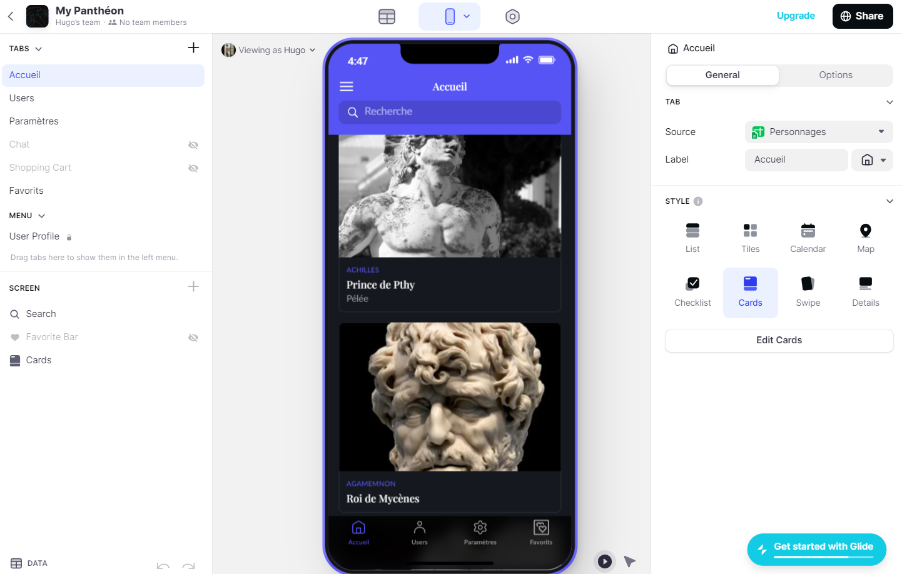
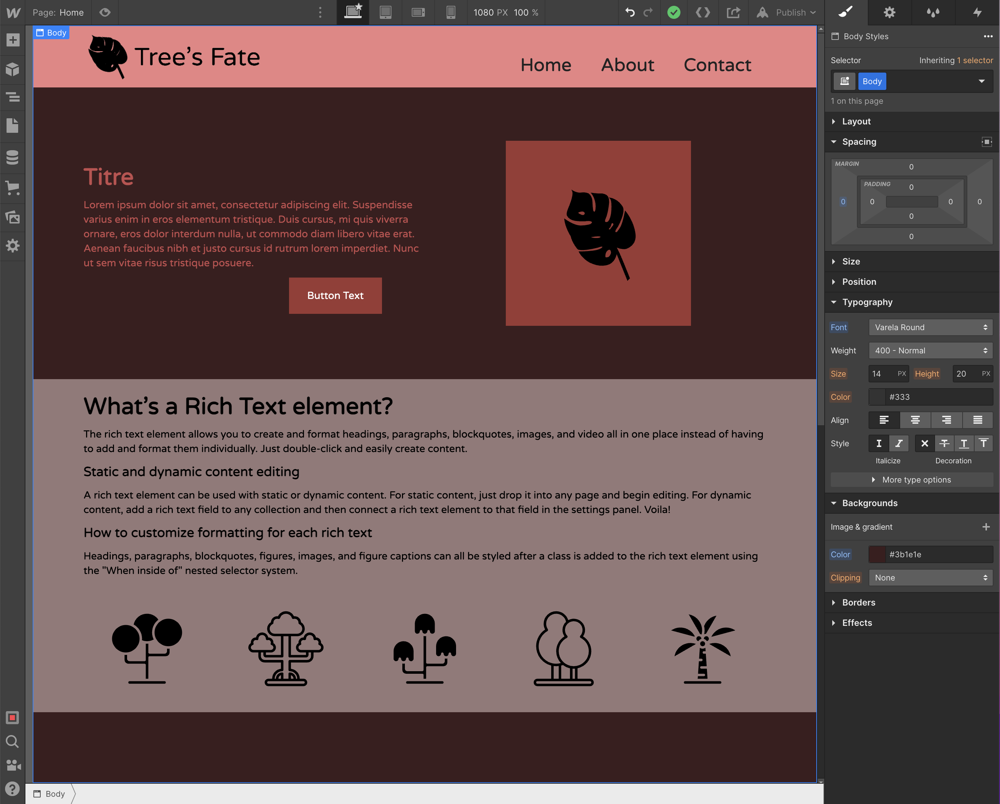
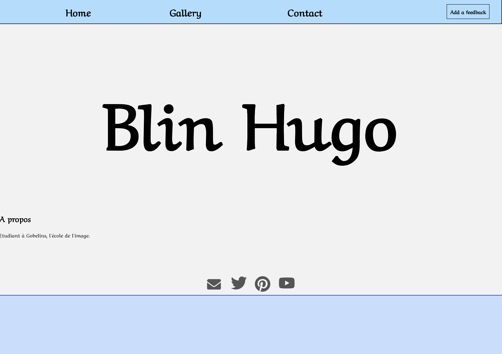
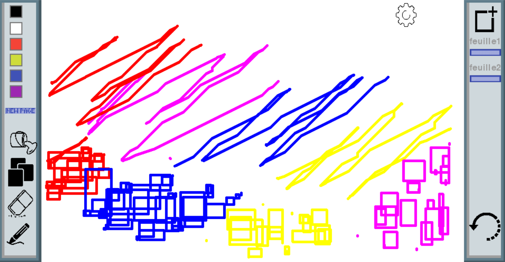

Glide App - My Panthéon - 2022
my-pantheon-wiki.glideapp.io
Projet initié après une inititiation à Glide qui a fais naitre un intéret particulier pour ce support qui se présente comme plus efficace et rapide pour produire une application fonctionel et utilisable immédiatement. My Panthéon ce veut rassembler de facon tres visuel l'ensemble des personnage mythologique rencontré sur différents format : livre, jeu video ou meme piece de théatre.

Webflow Website - Tree's Fate - 2022
https://hugos-exceptional-site-510eda.webflow.io/
Ce site a pour vocation purement graphique et malgré son nom ne veuille rien revendiquer, il représente siplement ma découvert de webflow un outil utils malgré qu'il reste assez limité dans sa version gratuite.

HTML website - Id-erased - 2021
https://sasori35000.github.io/Id-erased/
D'abord créé pour être un site de news qui ne serait utilisé uniquement dans le cadre d'un projet du cours de NSI de première, il a été réarangé et amélioré pour devenir le lien sur lequel vous avez cliqué. Il a pour but de montrer de façon effective ce qu'il m'a été donné de réaliser au cours de ma scolarité au lycée mais aussi sur mon temps libre; vous pourrez y trouver des informations relatives à sa fonction première mais aussi d'autres projets de mon innitiative.

HTML website - Id-erased - 2021
https://blin-hugo.github.io/Portfolio/
D'abord créé pour être un site de news qui ne serait utilisé uniquement dans le cadre d'un projet du cours de NSI de première, il a été réarangé et amélioré pour devenir le lien sur lequel vous avez cliqué. Il a pour but de montrer de façon effective ce qu'il m'a été donné de réaliser au cours de ma scolarité au lycée mais aussi sur mon temps libre; vous pourrez y trouver des informations relatives à sa fonction première mais aussi d'autres projets de mon innitiative.

Python-Pygame - Logiciel de dessins - 2021
Le projet a pour but d’être un logiciel de création graphique, il sera réalisé grâce à la librairie pygame de python. Idée directrice au lancement du projet : réaliser une version du logiciel possèdent les fonctionnalités les plus importantes de Paint.
Liste de fonctionnalités : Dessiner, rogner, colorier, remplissage (paraît complexe à réaliser à première vue), zoomer, etc ….
Information pratique : utilisation de la librairie PIL image (vu en snt en second), utilisation de la POO pour créer une feuille qui servira de support au dessin (implémentation de l’objet feuille)